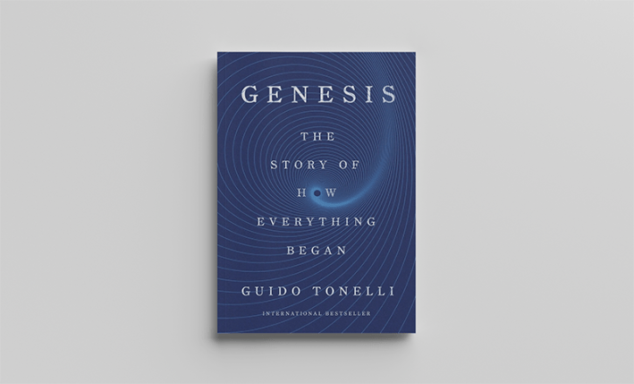
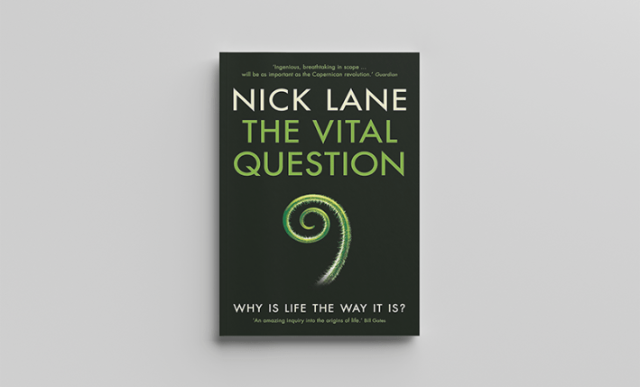
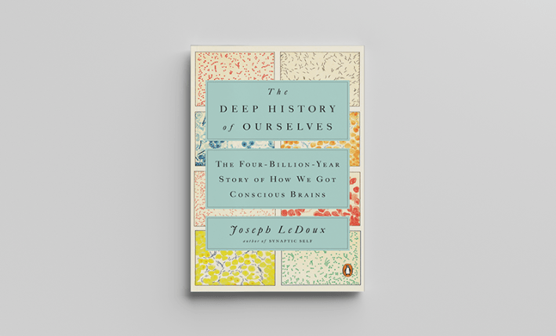
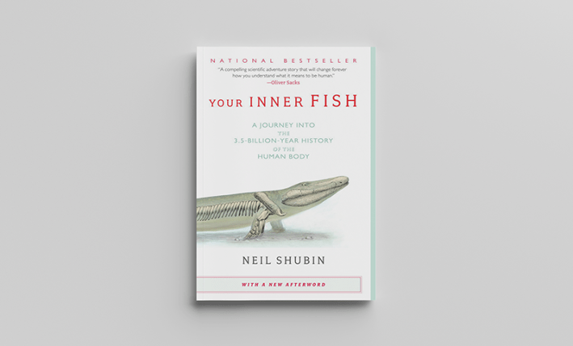
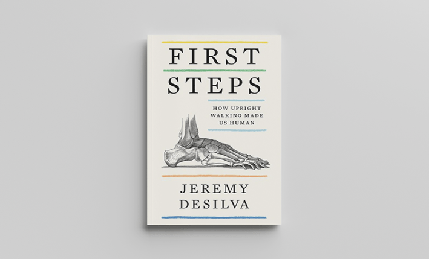
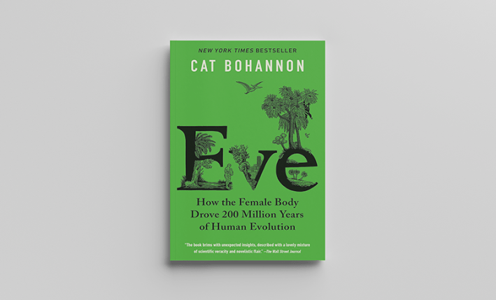
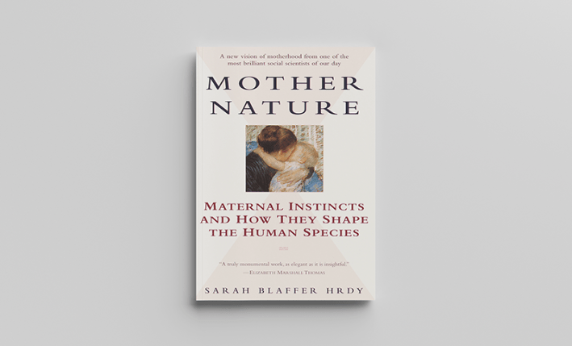
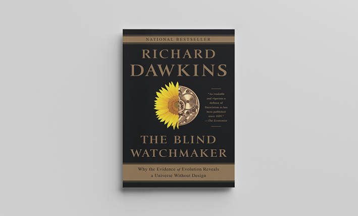
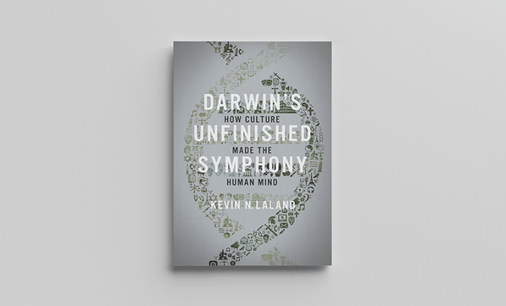
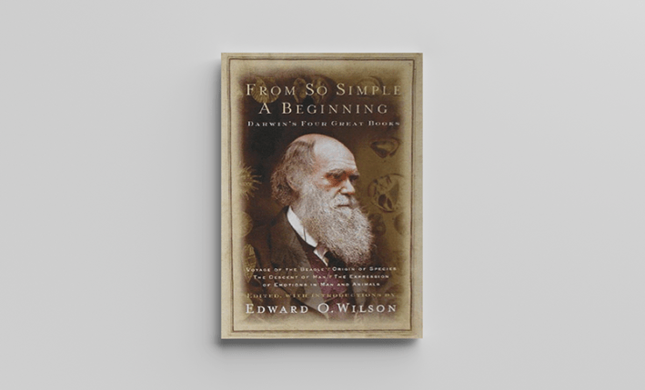

Well, how did I get here?” That’s a very good question, David Byrne. Lucky for you and Talking Heads fans old and new, Nautilus is here with 10 books that explain how you and every living thing got here. It’s a once-in-a-lifetime list.
Genesis: The Story of How Everything Began by Guido Tonelli

Macmillan Publishers
Tonelli is a particle physicist who was a key player in the discovery of the Higgs boson, the “God particle,” which generates mass in the universe—and a truly engaging writer. Tonelli structures Genesis on the Biblical seven days of creation, a fanciful conceit that works because while he pays eloquent heed to the hold that mythologies have on humanity, he shows how science “retells the story of our origins more imaginatively and powerfully than any mythological narrative.” His luminous explanation of cosmic inflation, how stars, galaxies, and planets formed, is one of the most exciting I’ve read. You come away thinking, “Yes, In the beginning, I understand now.”
The Vital Question: Energy, Evolution, and Origins of Complex Life by Nick Lane

W. W. Norton & Company
Now that laws of physics are inscribed in the universe, seeding solar systems with planets composed of minerals and chemicals, we need to know how biological life arose. In The Vital Question, Lane explains how it most likely did in the strange volcanic brew of deep-ocean hydrothermal vents on Earth. The vents on our primitive planet, Lane writes, “provide exactly the conditions required for the origin of life: a high flux of carbon and energy that is physically channeled over inorganic catalysts, and constrained in a way that permits the accumulation of high concentration of organics.” As you see, you are going to spend some time in chemistry class in The Vital Question, but I promise that you will graduate enlightened.
The Deep History of Ourselves: The Four-Billion-Year Story of How We Got Our Conscious Brains by Joseph Ledoux

Penguin Random House
The distinguished professor of neuroscience at New York University is a pioneer in research about the nervous-system circuits that wire our survival instincts and emotions. “I started asking, ‘How far back in evolution does the ability to detect and respond to danger go?’” Ledoux said to me in an interview. Oh, it goes way back. Reading The Deep History of Ourselves brings a bracing awareness of the connection between the first organisms on Earth and your brain today. “Ancient bacteria, like present-day bacteria and humans, had to detect and respond to danger, incorporate nutrients and energy, and balance fluids; and for their kind to survive they had to reproduce,” Ledoux writes. We are all one indeed.
Your Inner Fish: A Journey Into the 3.5-Billion-Year History of the Human Body by Neil Shubin

Penguin Random House
The first vertebrates on Earth were fish and the big question for us, being vertebrates ourselves, was when and how did we become fish out of water? That’s the story the paleontologist tells in Your Inner Fish with elan and even humor. In 2004, on Ellesmere Island in the Arctic, Shubin and his team discovered a fossil they called Tiktaalik, a fishy creature that “was specialized for a rather extraordinary function: It was capable of doing push-ups.” It had a flat head, a shoulder, elbow, and wrist composed of the same bones in a human’s upper arm, forearm, and wrist. Tiktaalik used those bones to navigate shallow streams and ponds “and even to flop around on the mudflats along the banks.” Here was the creature from the black lagoon that embodied a clear link in the evolution of fish to us.
First Steps: How Upright Walking Made Us Human by Jeremy DeSilva

HarperCollins Publishers
How we got from plodding around the swamp on four legs to swinging in trees to running city marathons is no less an incredible tale. DeSilva, a paleoanthropologist at Dartmouth, takes us through our evolution as primates in a cinematic story. And it’s not the story we’ve been told. “The image of a chimpanzee slowly turning into a human that we see on T-shirts and coffee cups and bumper stickers may not be how this all unfolded,” DeSilva told me. “It could very well be that the common ancestor was more upright, and that chimpanzees and gorillas evolved knuckle-walking independently.” Why bipedalism allowed our species to survive and thrive, culminating in human culture and intelligence, is the exciting narrative drive of First Steps.
Eve: How The Female Body Drove 200 Million Years of Human Evolution by Cat Bohannon

Penguin Random House
In a Nautilus interview with Bohannon, Lucy Cooke, author of Bitch: On the Female of the Species, introduced Eve as “a sweeping revision of human history that places the female body center stage, instead of just a feminine footnote to the macho main event.” Reading the book, like talking to Bohannon, Cooke writes, “is like being struck by a tornado of ideas.” And speaking of the benefits of why humans walk upright, Bohannon told Cooke, “It’s useful to think about who has the greatest need for nutritive resources. Is that going to be the male with the slightly bigger body plan? Or is it going to be a female who is the primary caretaker in nearly every primate species? Who is also lactating, which is metabolically costly, and is going to require a lot of food to feed the kid. The dawn of bipedalism to me sounded a lot more like single moms with a hungry kid who needs to expand her range.”
Mother Nature: A History of Mothers, Infants, and Natural Selection by Sarah Blaffer Hrdy

Penguin Random House
Bohannon’s Eve is the offspring of the pioneering field research and books by Hrdy, a primatologist and anthropologist, and emeritus professor at the University of California, Davis. Among so many brilliant insights into the evolution of women and mothers, Hrdy is known for what she calls the “grandmother clock hypothesis,” which underscores the role that menopause and grandmothers have played in human survival. “According to the hypothesis,” Hrdy writes, “long childhoods came not as a gift from man-the-hunter, but as life-historical prelude to a long life in which all phases of growth, maturity, senescence, and death are interrelated. Broadly defined this way, the long postmenopausal stint is, in fact, an integral part of the human organism’s reproductive plan.”
The Blind Watchmaker: Why the Evidence of Evolution Reveals a Universe Without Design by Richard Dawkins

W. W. Norton & Company
In the latter half of his career, the evolutionary biologist has become a celebrity atheist shouting down religion in the public square. Behind the pugilist debater, though, lies the eloquent writer, among the best science has ever known. The Blind Watchmaker contains all Dawkins’ trenchant science about selfish genes as the basic units of natural selection, as well as his rebuttal to gods as intelligent designers of the universe. One exquisite example is bat sonar, which allows bats “to make a go of the night-hunting trade,” and which arose in gradual, cumulative evolutionary stages, neither by intention nor blind chance. Natural selection “does not plan for the future. It has no vision, no foresight, no sight at all. If it can be said to play the role of watchmaker in nature, it is the blind watchmaker.” This book is Dawkins’ greatest show on Earth.
Darwin’s Unfinished Symphony: How Culture Made the Human Mind by Kevin N. Leland

Princeton University Press
We’ve come a long way. We walk upright on two legs, adapt to most any environment, have complex brains and language. Leland picks up the story beautifully. “Humanity’s success is sometimes accredited to our cleverness, but culture is actually what makes us smart. Intelligence is not irrelevant of course, but what singles out our species is an ability to pool our insights and knowledge, and build on each other’s solutions.” In Leland’s frame, cultural evolution is a form of natural selection—“virtually all innovation is a reworking or refinement of existing technology”—that has led to new technologies, yes, but also art. “In the absence of a mind fine-tuned by natural selection for optimal social learning, art simply could not be produced.” Leland’s peroration on dance as enlightenment is my favorite section in the book.
From So Simple a Beginning: The Four Great Books of Charles Darwin (Voyage of the Beagle, On the Origin of Species, The Descent of Man, The Expression of the Emotions in Man and Animals). Edited with Introduction by Edward O. Wilson

W. W. Norton & Company
How did we get here? Darwin, that’s how. None of these books are possible without him. He is the foundation on which everyone else is riffing. So why not just read Darwin himself? You should! It’s so exciting because as you read along you realize all his extraordinary descriptions of nature and deductive insights are new, coming at you and the world for the first time. I personally happen to love his Victorian prose, blooms of science and poetry without inhibition, vines running wild. This wonderful edition of his four main books is a beauty. Just dip in anywhere. I guarantee you will stay, your mind sparkling. To inspire, I leave you with the famous first sentence of the concluding paragraph of On the Origin of Species.
“It is interesting to contemplate a tangled bank, clothed with many plants of many kinds, with birds singing on the bushes, with various insects flitting about, and with worms crawling through the damp earth, and to reflect that these elaborately constructed forms, so different from each other, and dependent upon each other in so complex a manner, have all been produced by laws acting around us.” 
Lead image by Tasnuva Elahi; with images by Vectorus and Your_Demon / Adobe Stock